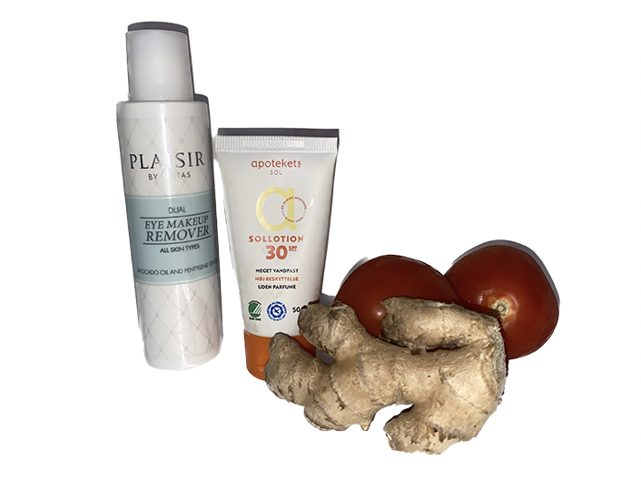

Investering i Din Hud: Sådan Vil Din Nuværende Hudpleje Påvirke Din Fremtid
Introduktion
Det, du vælger at gøre for din hud i dag, har en afgørende indvirkning på din huds fremtidige tilstand og sundhed.
Det er derfor essentielt at forstå, at det, du praktiserer for din hud nu, ikke blot leverer øjeblikkelige resultater,
men skaber en
langvarig investering i din kommende hudkvalitet. Det er derfor vigtigt at komme i gang med den rette hudpleje allerede i dag.
Kom i gang med hudpleje i dag:
Forebyggelse af tidlig aldring:
Start aftenplejerutinen ved at bruge en mild ansigtsrens eller vask for at fjerne snavs,
makeup og olie, der har akkumuleret i løbet af dagen. Dette sikrer, at din hud
er ren og klar til de næste trin.
Sund hud:
Regelmæssig rensning og fugtighedsbehandling hjælper med at opretholde sund hud. Ved at beskytte hudens naturlige barriere og forhindre tab af fugtighed,
kan du undgå udtørring og hudproblemer.
Forbedring af hudtilstanden:
Hvis du allerede har hudproblemer som akne eller tør hud, kan din hudpleje nu hjælpe med at forbedre disse forhold. Korrekte produkter og plejerutiner kan reducere symptomer
og forhindre yderligere skader på din hud.
Selvtillid:
En klar, sund hud kan øge din selvtillid og velvære.
Dette har indvirkning på din følelse af velvære og selvopfattelse.
Langsigtet investering:
Du investerer i din fremtidige hud ved at tage dig af den nu.
En god hudplejerutine kan spare dig for dyre behandlinger og problemer senere i livet.

Start aftenplejerutinen ved at bruge en mild ansigtsrens eller vask for at fjerne snavs,
makeup og olie, der har akkumuleret i løbet af dagen. Dette sikrer, at din hud
er ren og klar til de næste trin.
Gode råd til sund hudpleje over tid:
Præventiv hudpleje: Brug solcreme
• Solcreme og beskyttelse mod UV-stråler er afgørende for at forhindre tidlig aldring og beskytte
din hud mod solskader. Solcreme fungerer som en barriere mod både UVB- og UVA-stråler,
der kan forårsage alt fra forbrænding og hyperpigmentering til alvorlige hudproblemer som kræft.
Det hjælper også med at bevare hudens ungdommelighed ved at reducere nedbrydningen af kollagen
og elastin, der fører til rynker og tab af elasticitet. Investering i solcreme er en langsigtet strategi
for at opretholde sund og smuk hud i fremtiden.-
Køb produkter med: Antioxidanter og anti-aging ingredienser
• Antioxidanter beskytter din hud mod skader fra sollys og forurening,
reducerer betændelse og hjælper med at forhindre rynker og alderspletter.
Anti-aging ingredienser som retinol og hyaluronsyre hjælper med at mindske rynker,
holde huden fyldig og reparere solskader. Når du bruger produkter med disse ingredienser,
holder du din hud sund og ungdommelig i længere tid.
Det er klogt at sigte efter disse ingredienser i dine produkter allerede nu mens du er ung.
-
Sund livsstil: Nøglen til at bevare en sund og ungdommelig hud
• Kost: Spis masser af frugt og grøntsager for at give din hud de nødvendige vitaminer og antioxidanter.
• Motiont: Træning forbedrer blodgennemstrømningen til din hud og hjælper med at fjerne toksiner.
• Søvn: Søvn giver din hud tid til at reparere sig selv og forblive frisk og strålende.